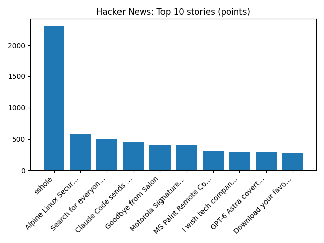

What is the Paris Agreement and why does 1.5C matter?
BBC — Science
YOUR DAILY INTELLIGENCE BRIEF · 2026-11-06
Global watch: What is the Paris Agreement and why does 1.5C matter?, Kenyan cult leader sentenced to 200 years in prison for mass starvation murders of children - Reuters.
Northern Virginia: Virginia vote scheduled on e-bike, scooter limits along Washington and Old Dominion Trail - FOX 5 DC, 17 Upscale Northern Virginia Restaurants Taking Thanksgiving Reservations - Northern Virginia Magazine.

Global coverage includes What is the Paris Agreement and why does 1.5C matter?; Kenyan cult leader sentenced to 200 years in prison for mass starvation murders of children - Reuters; AI stocks climb after trillions wiped from market values. Local coverage includes Virginia vote scheduled on e-bike, scooter limits along Washington and Old Dominion Trail - FOX 5 DC; 17 Upscale Northern Virginia Restaurants Taking Thanksgiving Reservations - Northern Virginia Magazine.

PSPaudioware
PSPaudioware.com s.c. PSPaudioware was one of the first developers of audio plug-ins for digital audio workstations.
https://en.wikipedia.org/wiki/PSPaudioware
Runs so far today: 2